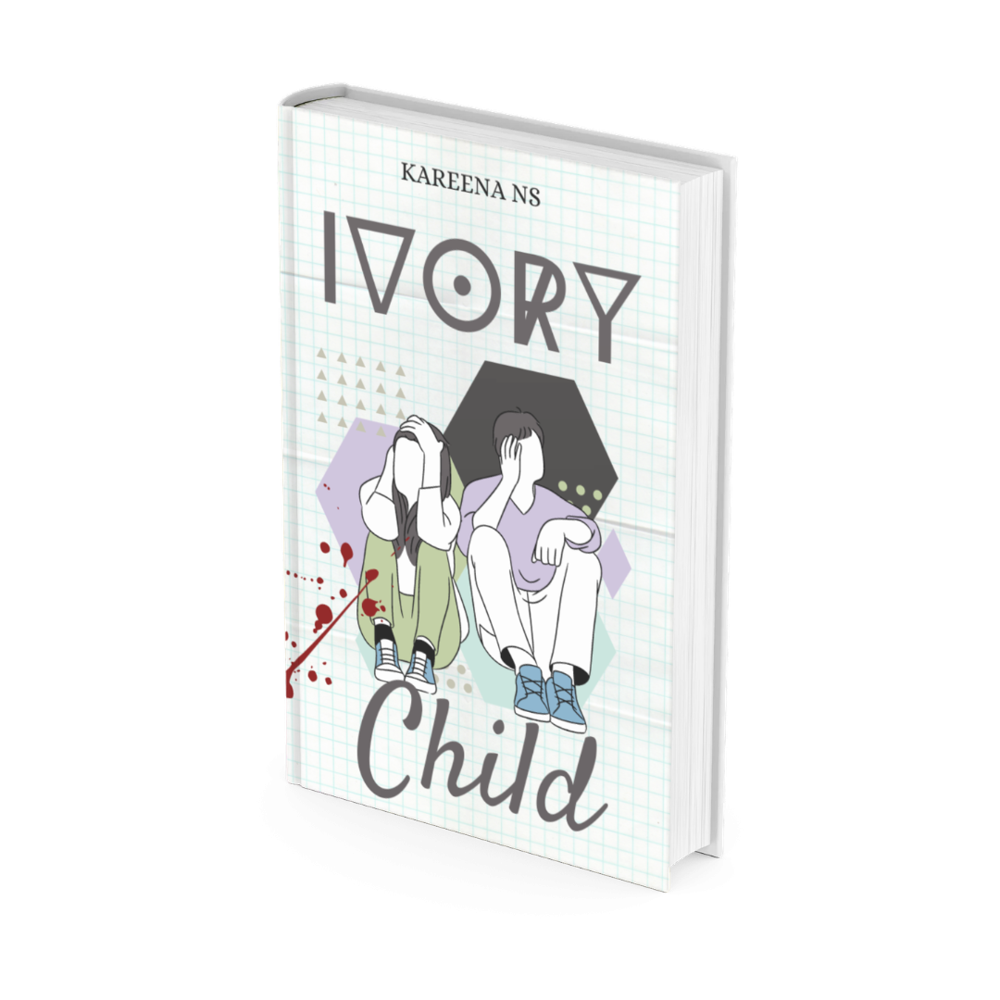
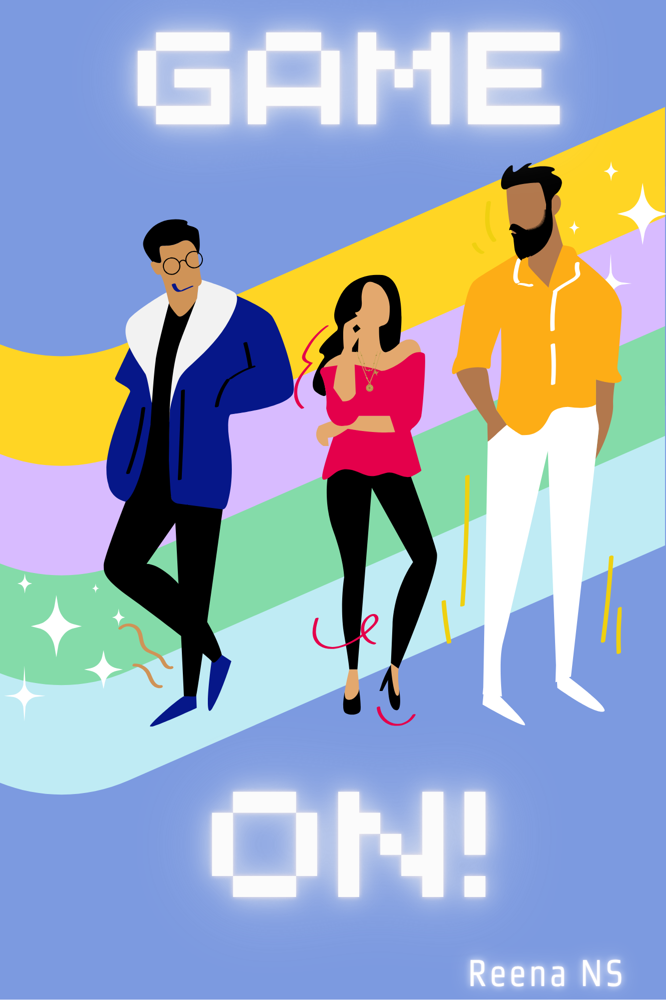

Ivory Child
What happens when the perfect student meets the boy that can cause a school to fall apart? Exclusively on Wattpad.

Nalini came to college with one goal: win the Game On! showcase. She didn’t plan on competing against her ex—or realizing that the spark between them might be the one thing she can’t control.
Excerpt
The Start of a New Beginning
Of all the people I expected to see at Game On!'s fall recruitment, my ex ranked somewhere between my third-grade teacher and Beyoncé.
The lights were off in Nexus’s lecture hall G, and a projector cast an eerie blueish glow on whispering clumps of freshmen. I’d spent two months prepping rigorously for today, and I’d be damned if I let a packed room throw me off.
I was on my way to a decent looking spot when I saw him. He wore an easy smile on his lips while he chatted up the exec board member to his left.
A year ago, I'd have been admiring his charisma and the way his eyes crinkled when he laughed. Now, a weird pit formed in my stomach. My stare lingered a beat too long.
What was he doing here? He used to roll his eyes whenever I talked about recursion. Used to call debugging "computer masochism."
As if he felt my gaze, his dark brown eyes landed on mine. For a second, neither of us looked away. Something shifted in his expression—so quickly I might've imagined it—before he gave me a once-over like I was nothing more than a stray piece of lint on his shirt.
All my blood clotted into one congealed heap. Damn, cold.
I scurried to grab a seat in the second row, almost right behind him and the boy.
“And between us… if you just agree with what everyone else says during their speech, you should be fine. Just take bits and pieces from everyone else,” the guy whispered to him.
Had he not prepared a presentation? Ten percent of applicants made it into Game On!. Did he expect to just waltz in here and land a spot in one of the most competitive orgs on campus?
Knowing his luck, he’d probably ace it. That irked me. I’d spent my whole life fighting against the current while he always seemed to coast.
“Hey, is this seat taken?”
“Nope. Sit at your own risk,” I murmured while drilling holes into the back of Shaz’s perfectly glossy head of hair.
The chair next to me squeaked as someone plopped down. At the sound of a bag unzipping, I finally glanced over—and found a familiar beard and dark curls.
“Oh lord, sorry Rasheed. I ent even know it was you.” Rasheed and I met a few hours ago before my 8 AM ethics class.
He folded his arms over his chest and glared at me. “Yuh should be sorry, gyal,” he said, half-serious, nudging me with his shoulder. I caught a whiff of his spicy cologne. “You seem to be everywhere I turn. Like you is my soulmate, owa?”
I felt my cheeks get hot, and my lips curved up. If my dad heard a boy talking to me like this on my first day of college, he’d have an aneurism.
“Perhaps, or maybe, we meant to be arch-nemeses,” I joked.
Out of the corner of my eye, I spotted Shaz glance back to look at Rasheed, then me.
Rasheed shook his head. “I think you already find a archnemesis,” he said, then puckered his lips to gesture to Shaz, a familiar Caribbean way of pointing without making it obvious.
Shaz’s left thumb would worry into his drumstick whenever a bandmate played a wrong chord or fell off-beat. He did that now at the edge of his desk.
“Alright everyone, today’s a very special day. Recruitment day!” the president announced, then clapped her hands together. “My name is…”
Emily Stanford, third-year, computational media, creator of one of Game On!’s most impressive games, and already sitting on a full-time offer from Blitz after graduation. I might have done a little cyberstalking on her.
“Emily, and I’m Game On!’s president. Usually, we do introduction presentations as auditions,” she started. Usually? I had spent months prepping for today. “But this year, I want to try something different to filter recruits into members. A coding challenge!”
Cold spread across my chest and trickled into my limbs. I wasn’t prepared for something so on-the-nose. Game On! never had live auditions before. Not in any of the archives, forums, or Reddit threads I’d dug through at two in the morning. This was a casting call, and I hadn’t even learned my lines.
If I choked in front of everyone, I wouldn't just be walking back to my dorm empty-handed—I'd be walking back to a lifetime of my dad reminding me he told me so. Doctor. Lawyer. Anything but this.
“Each of you guys will have an hour to code a prompt you can choose from this list.” Emily clicked her mousepad definitively, and the next slide of her presentation contained a list of about 20 prompts—dense and unforgiving.
My brain stalled, and I glanced around the room. People were shifting nervous glances to each other. Next to me, Rasheed whistled low.
“Wam gyal, like yuh nervous?” he whispered. The boy leaned back in his chair, and his long legs sprawled out ahead of him.
“Aren’t you?” I asked him through pursed lips. He looked the way I wanted to feel—as confident as a seagull hungry at sunset.
“I’ll give you all a minute to choose your prompt, but once it’s 5:35 PM, your hour begins.”
I pulled out my laptop and booted it up. Looks like we weren’t wasting any time.
Next to me, Rasheed made no move toward his laptop. His sharp eyes hovered over groups of students and eventually landed on Emily. Instead of lobbing a joke at him, I shook my head imperceptibly and got to studying. I couldn’t spare precious brain power wondering about his nonchalance.
Someone in the third row raised his hand. Emily frowned and lifted a brow, but motioned for him to speak.
“What if we already prepared introductory presentations?”
She gave a tight-lipped smile. “Unfortunately due to some incidents of cheating last year, we won’t be doing that for recruitment. But hey—stick around and you’ll still get four teams battling it out, a cash prize, and a shot at pitching to Blitz’s CEO. Just with a higher entry barrier.”
A few people laughed. No one sounded entirely relaxed.
“Now,” she continued. “Remember that it doesn’t have to be perfect. Let’s see what you can do.”
She clapped once, and a timer at the top of her laptop screen started. The room dropped to the decibels of held breaths for about ten seconds. Waves of keyboards clattering rolled across the room, starting with Shaz.
I scanned through the list again, and finally, my gaze landed on a prompt that stuck out to me. ‘Design a dialogue system with branching choices and meaningful consequences that affect the outcome of a short scene.’
My fingers moved before I could second-guess myself, and I joined the sea of keys clacking.
By the ten minute mark, I had something basic mapped out. By thirty, the logic was in place, branches connected, outcomes starting to take shape.
I leaned back, scanning through my logic—And made the mistake of looking up. In the row in front of me, Shaz was already done. Or, at least, it looked like it. His screen was too dark for me to see—damn those privacy protectors—but he wasn’t typing anymore. Just… watching his screen, one hand resting against his mouth like he was pondering the existence of narwhals instead of scrambling to finish.
No way.
I glanced back at mine, suddenly hyper-aware of every messy line. It didn’t help that Rasheed hadn’t opened his laptop at all and just curiously peeked around the room. Did he have some kind of secret advantage to get in? Was he going to whip out a tap dance performance? Maybe throw in some balancing gerbils?
Focus, Nalini.
I forced myself back into it. Finally, I got to the point where everything felt cleaner, and my unit tests ran. My comments documenting functionality were janky, but the logic worked.
The timer ticked down in the corner of Emily’s screen. 2 minutes, 43 seconds left. Plenty of time. Unless something went wrong. Like on cue—my build froze.
My breath caught in my throat.
No, no, no—
I ran it again. Error.
My eyes scanned through the line, and everything surrounding it. I swallowed hard, fingers moving faster now, backtracking, scanning, trying to find where it all went sideways.
Think. Don’t panic—trace it.
I locked onto the conditional in that line I’d just changed.
If choice B, then—
Wait. There was no semi-colon. I deleted it by accident. My heart thudded in my chest while I corrected the mistake and reran the program.
For half a second, nothing happened. Then—it worked. Every branch, every condition, exactly how I intended. A shaky breath slipped out of me, something between a laugh and a sob.
Okay. Okay, we are so back.
“Time!”
I hit ‘save’ like my life depended on it and leaned back in my chair. My hands shook like a 7.8 magnitude earthquake. Around me, people were already exhaling, stretching, and whispering to each other.
“Great work, everyone. Now we move on to evaluations. You’ll be grouped based on the prompt you selected. Each group will present their approach, walk us through their logic, and answer questions.”
A pause.
“If you’re the only one who selected a prompt, congratulations—you move forward automatically.”
Murmurs rippled through the room.
“And if you’re not…” Her gaze swept across the room, and she said, “Then you’ll be evaluated against each other. Obviously, if there are two good approaches to a topic, I’ll have to consider both, but overall—we’ll have one winner per category chosen.”
I prayed to everything above that I was the only one who chose the dialogue systems prompt.
“For our first evaluation, let’s start with…” Emily tutted a few times and peered intently at her laptop. “Dialogue systems!”
I stood up, and at the same time, Shaz did too. He did the same prompt? There was no way he finished that early. He had to have copied it from someone else. Or cheated. Or it fell out of the sky and landed on his computer screen.
Losing a recruitment round would suck. Losing to Shaz? That would follow me for the rest of the semester. Hell, it would follow me for the rest of my life.
Emily’s eyes glanced between us two, and she settled on me first. “You can start.”
I stepped forward, forcing my legs to cooperate, and plugged in my laptop. The screen flickered onto the projector—my code, blown up and suddenly a lot messier than it had looked five seconds ago.
Green text comments and light blue variable names stood out against my dark background. The screen shrouded the room in muted light. I couldn’t make out anyone’s face clearly anymore. I sucked in a breath hearing slight chatter from the back. I hoped they weren’t talking about my messy code.
“Um—hi,” I started, then immediately wanted to take it back.
Great. Off to an amazing start.
I cleared my throat. “So, I chose the dialogue system prompt. The goal was to create a branching structure where each choice meaningfully impacts the outcome of the scene.”
I clicked through my program and pulled up the main logic. My voice steadied as I kept going, slipping into something more familiar. Explaining. Breaking things down. This, I knew how to do.
“For example—if the player chooses to trust the character early on, it opens up additional options later. But if they don’t, those paths are permanently closed off.”
The scene loaded, and a short exchange flashed on the screen, with options branching out underneath. I clicked through one path.
“You can see here—different choices lead to different outcomes. Some converge, but others don’t, so there’s a sense of consequence without making it impossible to progress.”
I paused, glancing back at Emily. “And… yeah. That’s the core of it.”
Silence. For half a second, my brain immediately jumped to the worst-case scenario. Too simple. Too safe. Not enough.
Emily nodded slowly. She bit the inside of her cheek and stared at the projector screen. Lines of code reflected off her wide-rimmed glasses. “Clean structure,” she said. “Readable. Functional.”
I felt my hope melt off my face. That didn’t sound like a win.
“It’s one of the harder prompts, but,” she added, “it plays it a bit safe. The branches are meaningful, but not particularly complex. I’d like to see more risk-taking in how choices interact.”
I nodded, even though my chest felt tight. “That makes sense.”
“Good foundation, though,” she said, making a quick note. “Thank you.”
I stepped back and moved to the side.
Now—Shaz.
He walked up like he’d done this a hundred times before, barely even glancing at the screen as he plugged in his laptop.
No nerves. No hesitation.
His code popped up on the projector, and immediately, the vibe was different from mine. There were long, windy comments at the start of each of his functions, and the code was formatted uniformly.
Polished, like he’d had more than an hour. My jaw tightened.
As he clicked through his demo, a few people in the room leaned forward. He built a system. But how? It was too perfect for someone who didn’t know how to code three months ago.
“…and that way,” he finished, “the player feels the consequences without hitting a dead end.”
Emily was silent for a moment. The rest of the room was, too. It seemed like he had hit a home run, but I kept my eyes locked on his functions. The indentation was flawless. The variable names changed conventions halfway through—switching from clean camelCase to snake_case. It looked like a patchwork quilt of copied code.
For a second, his easy confidence flickered—his eyes cutting to the screen like he was checking his own code was still there. Then it was gone, and he was smiling at Emily again like nothing happened.
After scribbling on her iPad for a few minutes, Emily gave a small, approving smile. “Nice. That’s clean.”
My nails dug into my arms when I folded them. This wasn’t looking too hot for me.
I studied his code—the comments were too clean, too uniform for someone who'd had an hour.
Wasn't he supposed to be coasting on other people's answers? This didn't look like coasting. This looked like someone who knew exactly what he was doing.
It reminded me of the one history project we ever paired on, back in eleventh grade. Shaz thought school was a waste of time, so he'd let an LLM write his half of our presentation. We got a zero and a week of detention for it.
Maybe he had help again. Or known the prompts ahead of time—it wouldn't be a stretch, given how cozy he'd been with that exec board member earlier.
Or maybe I just needed him to have cheated. Because the alternative was that he'd built something better than mine in under an hour, after four years of high school getting ready for exactly this.
I spent the rest of the meeting contemplating how much weight that “Nice” carried. Emily said she’d most likely choose one person out of each prompt—Did that mean Shaz earned a spot? More importantly, that I hadn’t?
Some people had nothing to present and simply walked out. I leaned over to Rasheed at one point. "Why didn't Emily call you up? You picked a prompt too, didn't you?"
Rasheed just grinned and nodded toward the projector, where the last slide of Emily's deck still glowed—a list under Game On! Officers. Right near the bottom: Rasheed Clarke, Treasurer.
I blinked. I'd spent the entire day assuming he was another terrified freshman. Apparently, I’d massively underestimated him. "You're an officer?"
"Surprise," he said, spreading his hands like he'd just pulled off a magic trick. "Wey, yuh face. Like yuh see jumbie."
"You let me think you were a freshman this whole time."
"Never said that. You assumed." His eyes gleamed, equal parts amused and proud of himself. "I wanted to harass meh new Trini partna a lil before she find out I does run things."
I rolled my eyes, but I couldn't quite hold back a smile. Annoying. But kind of sweet, too.
“Guys! Before everyone leaves, can… Nalini, Shaz, Michael, Yosef, Sarina, Rebecca, Jonah, Mary, and Camila stay for a minute? Oh, and the officers please.” Everyone else whispered to each other as they filed out of the room. I slung my bag on my shoulder and made my way over to Emily. When the last person left the room, she asked the last person leaving to shut the door.
“I’m sure you guys already figured it out, but you guys are my picks for the semester’s teams. So, congrats! You guys made it farther than most people. If you all write down your emails, I’ll send you all the information you need to start deciding on a team. We are still looking for one more team lead, so if you’re interested, please initial next to your email, and I can schedule you for an interview.”
She stepped aside after opening a notepad and placing it on the table. We all formed a makeshift line, and I dug in my bag for a pen. Before I had the chance to fish one out, Shaz let the person between us go and turned to me.
“Going for team lead?”
I pressed my lips into a thin line and nodded, trying to ignore the weird pulsing in my throat when he inched closer. “Planning to,” I whispered.
“Good. I’d hate to win by default. This should be fun, Nalu. Just like old times.” With that, he scribbled his email down on the pad and dipped out of the room.
Fun? I’d have more fun sliding down a cheese grater.
I was the last one to scratch my email down. I stared at the blank space for a moment, debating how far my initials might make it.
Game On! ran on a two-semester cycle. Spring was for arguing about ideas, building prototypes, and pretending everyone knew what "scope" meant. Fall was when teams actually had to build the thing.
Team leads were expected to inherit someone else's vision and somehow turn it into a finished game. Freshmen almost never got those spots. There was a bigger chance of me landing on the moon than getting a team lead spot. I scribbled ‘NM’ down anyway. When I finished, I handed the notepad to Emily.
“Thank you, Nalini.” Before she moved to grab her backpack, she whispered to me, “Your code was good. Just... safe feels safe until it doesn't, you know?”
My lips parted, but no words left my mouth. Before I had the chance to gather something at least semi-coherent, Emily ducked into conversation with someone from the exec board. I stood there feeling like I'd missed something obvious, but couldn't tell you what.
Sighing, I pushed through the door. The hallway was a lot quieter than the room. In the distance, I heard the sounds of feet shuffling and light chatter. Nexus seemed to be the student hub—club meeting rooms, restaurants, and different things filtered on each floor, and I had taken about an hour during move-in to explore the building with my dad. They even had a film room.
This wing of Nexus seemed to be all the nerdy club meeting rooms—chess, Spanish… Game On!. And it just so happened that one of the nerds was waiting out here. Leaning against one of the columns just outside the room, arms crossed, one foot braced back against the wall like he’d been there a while.
My steps slowed.
“For someone who doh have my contact,” he said, pushing off the column, “you sure take yuh time.”
I folded my arms. “For someone who disappears mid-conversation, yuh look rel comfortable waiting.”
He smiled—small, easy—and fell into step beside me. “Had to give you a chance to miss me.”
I rolled my eyes and let him open the door outside. The sky streaked orange, and the sun was a fiery ball peaking out from above the treeline. I looked up at him. Sunset beams caught in his curls, casting a warm brown glow.
“You should come to Depsi tonight. Big fete, lots of drinkin’ and dancin’,” he casually mentioned. I didn’t miss the way his eyes dropped to mine. It was a subtle, persuasive glance that sent shivers down my arms.
“A frat party?” I asked with a raised brow. I’d never been to a party other than sleepovers when I was thirteen. This would be my first one. I didn’t want to admit that to him in fear of what he would think. I thought for a moment. “I doh know… Parties not really my thing.”
He raised a brow. “I never meet a Trini who doh love a good fete. You sure you Caribbean?”
I laughed, but said nothing. Rasheed stopped walking and turned to me. I had to crane my head up to look at him.
“Tired from beefing with yuh boyfriend dey?”
He jerked his head toward a lightpost in the distance. I looked over, and my eyes widened. Shaz leaned against the pole and laughed with the boy from before.
“That is not my boyfriend.”
Rasheed hummed, followed my gaze, and said, “Man watching like you’s a piece of land he want to throw cutlass for after the jhandi hang up.”
I snapped my focus back up at Rasheed. I debated whether I should tell him the truth—that Shaz was my high school ex of two years, and that I was trying my very hardest not to throttle him with one of those mallets RA’s give you to adjust the height of your dorm bed. Instead, I just joked, “Trust me; he would not know how to wield a cutlass,” with a light laugh.
We walked a few more steps down the path, gravel crunching under our shoes. The evening air had cooled a little, and it smelled like fragrant night-blooming jasmine. For a moment, I let myself breathe.
The meeting had gone well. Better than well, actually.
I got in.
After years of hearing my dad’s criticisms when I built games instead of pre-MCAT studying, I’d actually gotten into Game On!. And yet, somehow the universe still found a way to ruin it by planting Shaz right in the middle.
Rasheed and I reached the fork in the walkway where the dorms split off from the student center, and I hesitated.
Was I going to let Shaz kill my mood? I’d earned my spot in Game On!… and I earned one reckless night.
“Maybe I’ll stop by.”
Rasheed pumped his fist like he’d just won the lottery. “Yes, gyal!”
I laughed despite myself.
Rasheed started walking backward again, pointing at me like he was issuing a command. I felt a small spark of excitement push through the chaos of the day.
“Nine o’clock,” he said. “Don’t chicken out.”
“No promises,” I called back.
He laughed and jogged down the path toward the frat houses.
I stood there for a second, watching the last of the sunlight disappear behind the trees.
My eyes caught on movement. Shaz had pushed himself off the lightpost and started walking down the path toward the parking lot. As he passed under the streetlight, his eyes flicked toward me one last time, and one corner of his mouth twitched.
If Shaz wanted war, then game on.
Featured Work

What happens when the perfect student meets the boy that can cause a school to fall apart? Exclusively on Wattpad.
Currently in search of beta readers for Game On!, a New Adult romance. Click on this tile to be rediurected to a form where you can sign up to read and provide feedback.